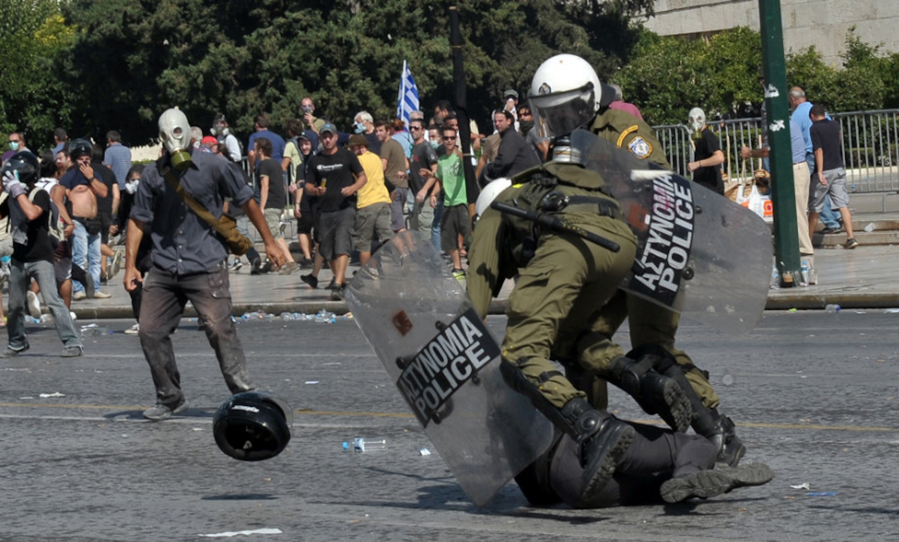
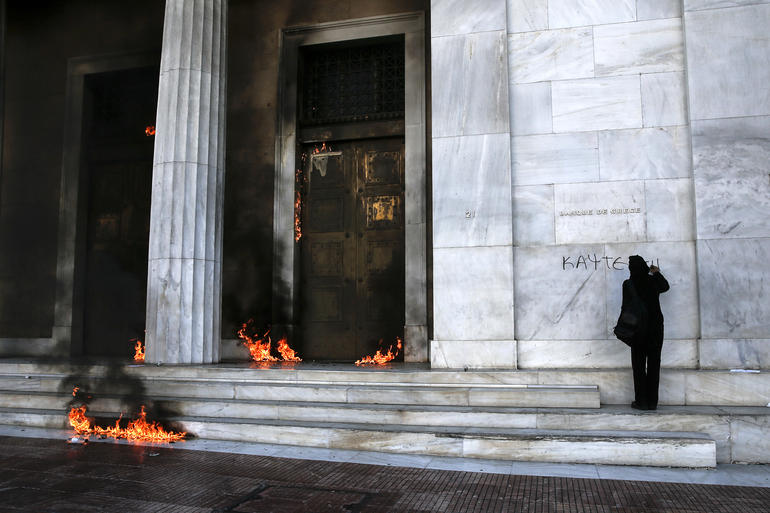

Last Sunday, Greeks sent a resounding “no” to the politics of austerity in a historic referendum. In the end, 61% of the country’s voters cast their ballot against the creditors’ proposed austerity deal, and 39% voted yes, with turnout of eligible voters at 62% (3.5 million people in a nation of 11 million). But before the week was over, in a seeming about-face, Greek Prime Minister Alexis Tsipras had proposed a new austerity package that included minimal debt relief.
What will happen next remains unclear — will the European “institutions,” so intent on making an example of Greece, dismiss the deal as insufficiently brutal? — but the deadly economic conditions the Greek people have endured seem set to continue.
So how have the last five years of austerity transformed the everyday life of the Greek working class? How do Greece’s working poor perceive their reality and the historical possibilities that lie immanent within it? What role could workers and their unions play in the rocky road ahead, as euros vanish from the banks and Greece descends into ongoing economic dysfunction? How do workers view the possibility of Greece exiting the eurozone?
To answer these questions, Erik Forman interviewed Eleni Eleftherios, a fast-food worker in Thessaloniki, Greece, in the run-up to last week’s referendum. The interview has been edited and condensed for clarity.
How did you end up working in fast food? Since I graduated from high school, I worked in fast-food shops every summer. I only had to work a few months per year because my parents were able to give me some money to get by while I was in college. My father has been a factory worker for thirty-five years, and my mother works as civilian clerical worker on a military base. But for the last three years, because of the crisis, my parents couldn’t help me with money anymore, so I had to find a job that could pay my rent and all my bills. My father went into retirement because it looks like the government is going to reduce pensions of people who retire later. I started university in 2004. I finished ten years later because of needing to work, but also because I got involved in the student movement. The last government, the New Democrats, wanted to put through legislation to privatize the university system. I was lucky enough to be a member of the movement to stop this. We had two years of occupations all over university faculties, and we won. University education is still free in Greece because of this struggle. So it took me ten years to graduate, but I don’t regret any of this — it made me who I am today. I got my degree in electrical engineering. About five years ago, there was a big burst of interest in photovoltaic energy. Anyone with a little land could install solar panels and make a few thousand euros a year. It was a bubble, and it burst. The government reduced the price they would pay people for electricity, and people don’t have the money now to install solar panels because of the crisis. So since graduating, I have sent out over one hundred CVs, and no one has answered me. Half of the companies that I sent CVs to have closed in the last year.
What happened when the crisis started?
In 2010, this was the first year you could see the consequences of the austerity measures of the European Union and the so-called New Democracy party. First they cut the pensions and salaries in the public sector.People used to dream of getting a job in the public sector, it was secure. This was the first thing that New Democracy targeted. They cut pensions almost in half. The New Democracy government accepted everything came from the troika. The monthly minimum wage used to be around €700, they reduced it to €500. Businesses have laid off lots of people. Unemployment has gone way up.
There were changes in the public health system, which is still run by the government here. It used to be that everyone had insurance, either through their employer, or if they were unemployed, they could get insurance directly from the government. You could see a doctor for free at a public hospital, but you would have to pay some for medicines and treatment.
The last government started to make you pay a copay of €5 just if you wanted to go see the doctor. It doesn’t sound that bad, but many people can’t afford this, so they don’t go to see the doctor. What is worse than the copay is that now many, many people have no health insurance at all and can’t afford medicines.
How has the crisis impacted fast-food workers?
Well, let me start with health insurance. Here in Greece, to have insurance as a worker in the private sector, your boss has to notify the government that you are working a certain number of hours at a certain wage. The government then gives you “stamps” that qualify you for insurance, and count toward your retirement. The company is obliged every three months to send in a form to the government saying how many workers they have and how many hours they are working. Workers get one “stamp” for every shift of at least four hours.
Before Syriza was elected, once you got one hundred stamps, you could get insurance from the government. Since the crisis, the majority of employers have begun lying on these forms. They underreport the number of hours their employees are working, so you don’t get the stamps. They do this because they have to pay payroll tax of around €200 per employee per month to insure their employees.
If you don’t have enough stamps because it looks like you haven’t worked enough hours, this means that you won’t be able to qualify for health insurance, and your boss won’t have to pay for it. If you get sick, you would have to pay for all of your medical costs. It’s impossible.
Before Syriza, the New Democracy government actually passed a law to reduce working off the books like this — to prevent bosses from underreporting the number of hours we work. They imposed a fine of €10,000 on bosses who don’t pay for the stamps that they should. For workers, this was an extra weapon to threaten bosses.
In some cases, workers have been able to use this threat to get their stamps and qualify for insurance, but it’s still a huge problem. For example, after two months at the shop I am at right now, I started asking about getting insurance. I asked my boss about getting health insurance maybe five times. They ignored me.
Then, after I had been working there for about eight months, my boss saw me at a picket line at another fast-food restaurant. I’m in the Union of Waiters and Cooks here in Thessaloniki. When I got to work, one of my bosses, I have four of them, was sitting in the shop reading the flier from the picket to one of my other coworkers. I wasn’t afraid of being fired — I know that if they do anything, there will be forty people protesting outside the shop.
After work, my boss offered to give me a ride home. He asked me, “Eleni, do you have any problems here? If you have any problems, we can discuss it.” So I told him, “Well actually yes, I would like to have health insurance.” You know what he said? He said he just forgot to file the paperwork. And so, after eight months at my current job, he filed the paperwork and I got health insurance.
I know many other workers who have asked their bosses to submit their stamps, and got fired. Fortunately, my boss is not very aggressive. But still now they are only counting half of the hours I work. I work eight or ten hours a day, but my boss only counts half my hours. This means that I’m getting health insurance, but that my stamps don’t count toward my retirement.
What are wages like in the fast-food sector?
Since the monthly minimum wage was decreased to €500 after the crisis began, the majority of workers in this sector have been making around €3 per hour. Of course, if the boss wants, they can give you more than this. The majority of bosses make a contract for a lower salary. Obviously, if you can pay a worker less, you will.
I am making €4 per hour. I know one friend who makes €5 per hour. The majority are making €3, €3.50. These are jobs like making coffees all day, or baking pizzas in 40°C heat, or delivering pizzas through traffic on a motorbike. Most people end up making around €500 per month, maybe a little more.
What are the work hours like? How is scheduling done?
It depends on the shop. In a cafe, you can see people working there from 10 AM to 3:30 AM. At a coffee shop that is open 24 hours per day, you have two or three shifts of workers, so people are working twelve hours per day. I work only nights the last two years, and it depends on the day and the schedule of the shop. If it’s not seven or eight hours, I work like ten hours on the weekend, from 8 PM to 6 AM.
In all of the shops I know of, the schedule changes every week. In the shop I work at, fortunately we have changed this to organize the schedule on our own. In the winter, I work four days a week, in the summer, when business is slow, I get maybe two days a week.
How do fast-food workers survive?
It’s very hard. Let me explain a little. The rents have decreased over the last five years, so you can find a place for €150 — not a very nice place, but at least it’s a roof over your head. Most people pay around €200 for rent. The other bills — gas, water, electricity — you need around €250.
If you’re making €500, which is the minimum wage and about what most fast-food workers make, you end up with €50–100 to live on for the entire month. If you are living alone, have no kids, other family members to care for and put food on the table, you can barely survive this way, but you can survive. It’s much worse if you have kids.
Most of my four coworkers have kids, and they are the only members of their family who are working, because their husband or wife was laid off in the crisis. In order to support their families, they have to work twelve to fourteen hours per day. It’s illegal to work such long hours, but there is no way around it.
You are doing the job of two people, really. It’s double a standard work week: sixty to eighty hours per week. You never see your children. In the shop I work, it’s €4 per hour, you can make maybe €1,000 if you work these kind of hours. If you work a place with €3 per hour, it’s of course worse.
There are also workers who are being paid just a fixed amount for their shift, like €30. That’s the maximum. So imagine, if you usually work eight hours, you’re making a little over €3 per hour. If you spend an extra two hours cleaning up the shop on the busy day, you don’t get paid for it, so now you’ve made €3 per hour.
How much is a souvlaki? Are bosses still making profits?
I’m glad you asked, I have gotten my PhD in souvlaki in these last five years of crisis. The shop I work at, where we make €4 per hour, the souvlaki is around €3. Down the street from where I work, the souvlaki is €1.50. I have seen pizza shops that are 80¢ per slice. So you have to imagine how low the wages must be so that the boss can still make a profit.
Fast food is probably the sector in Greece with the largest share of employment. Pizza shops, bars, cafes, fast-food shops, so it’s a really big sector, with really bad conditions. Greece has almost no factories at all. The majority of them closed in the last few years because of the crisis. Many of them moved to Bulgaria, where they can pay even lower wages.
The majority of small businesses are run either by families or by bosses with three, five, six workers. Many of these small businesses have closed, too. If you are walking around a big city, you can see the shops that are closed. But in shops that are open, they are open because they are making money, not much money, but a profit.
At my shop, because we count the cash register and order the products — so we know the costs and revenue — we can estimate that the boss is making around €3,000 in profit per month, enough to double everyone’s wages. But he doesn’t. Instead there are four bosses who sit around and get paid to drink beer and read the newspaper all day, and six workers who all make €4 per hour.
What were things like in fast food before the crisis?
It was better, but I cannot say it was really good. You could be paid like €6 per hour, maybe €7. Most bosses obeyed the basics of the labor laws. For example, if you work overnight, you have to be paid more.
That doesn’t happen any more, almost anywhere. If you work on Sunday, you have to be paid 175% as overtime wage. If you work on holidays, you have to make double. None of this happens anymore, and it’s illegal. It has become normal to work without insurance, without overtime, without holiday pay. That’s the saddest thing — workers have somehow accepted this as the new normal.
How have people dealt with the crisis?
Have there been struggles in other sectors?
There have been lots of other struggles. For example, workers occupied the Applebee’s in Thessaloniki for a few months when the company closed it. The landlord of the building eventually got the police to evict them, but it helped inspire other workers at a fertilizer factory called Vio.me. In 2012 the bosses decided to shut down the Vio.me plant, so the workers decided to try to operate the factory on their own — with a lot of solidarity all around the world.
They wanted the ministry of labor to write a law for this kind of situation: if the bosses abandon a business, workers should have the right to run the business on their own. They got support from Syriza then, before they were elected, but Syriza hasn’t made good on their promise yet, and now Vio.me might be shut down because of a court order. Still they are producing — at first illegally, and then they legally incorporated as a company so that they can sell their products on the market. This is the first example in Greece of this happening — it’s very inspiring.
Maybe the most major example of worker self-organization in Greece was the worker takeover of the public Greek Radio and Television network (ERT) by its staff when the New Democracy party shut it down. New Democracy closed down ERT and opened a new state-run network (NERIT) to broadcast party propaganda. Many of the laid-off workers occupied the building of ERT and put it under workers control and set up illegal television antennas all over the city.
The workers became more radical: they began showing up at social movements in the city, interacting with different movements. For the first time, ERT was public TV, not state TV. They occupied the station and ran it illegally as volunteers for two years. At the beginning, they had trouble with police, but the struggle was so big — people from all over the country supported these workers.
The state was afraid of going after them, especially right before the elections. It would have looked really bad, and they New Democracy had enough people against them already, and they already had created their own propaganda station anyway.
Has any of this changed because of the election of Syriza?
Speaking of the media, Syriza closed the state TV station that New Democracy set up to broadcast party propaganda, and reopened ERT with the ex-workers who were laid off, and had been working. This was a huge victory.
But for most workers, things are still very bad. For workers, I can’t say that a lot of things have changed. Syriza was saying they could increase salaries to €600, and then one year later to €700 after they got elected. They haven’t done anything like this.
For the last five months, they’ve been going back and forth between Brussels and Athens, trying to negotiate. One good thing they did do is decrease the number of stamps you need to get insurance from one hundred to fifty. They abolished the €5 copay in hospitals, but you still have to pay for medicine. If you have no insurance, you have to pay the complete cost of the medicine. If you have insurance, the government pays part of it.
Syriza also passed a law to give citizenship to children of immigrants who are born in Greece. This is a good start at least, for many immigrants. For the movement, one thing that is different — the police violence is dramatically lower.
To go to a demonstration when New Democracy was in power, you would need to bring a helmet, masks for tear gas, just to be able to breath. Police brutality was extreme. In Thessaloniki, going to a demonstration, they would surround the demonstration and follow you. Now we can go to demonstrations in sandals.
It didn’t feel good even being in demonstrations like this — even if you were outside the demonstration, you probably would think the demonstrators were terrorists because of how it looked. This changed immediately after the elections. There are no police now at demonstrations, and no violence.


How did you end up working in fast food? Since I graduated from high school, I worked in fast-food shops every summer. I only had to work a few months per year because my parents were able to give me some money to get by while I was in college. My father has been a factory worker for thirty-five years, and my mother works as civilian clerical worker on a military base. But for the last three years, because of the crisis, my parents couldn’t help me with money anymore, so I had to find a job that could pay my rent and all my bills. My father went into retirement because it looks like the government is going to reduce pensions of people who retire later. I started university in 2004. I finished ten years later because of needing to work, but also because I got involved in the student movement. The last government, the New Democrats, wanted to put through legislation to privatize the university system. I was lucky enough to be a member of the movement to stop this. We had two years of occupations all over university faculties, and we won. University education is still free in Greece because of this struggle. So it took me ten years to graduate, but I don’t regret any of this — it made me who I am today. I got my degree in electrical engineering. About five years ago, there was a big burst of interest in photovoltaic energy. Anyone with a little land could install solar panels and make a few thousand euros a year. It was a bubble, and it burst. The government reduced the price they would pay people for electricity, and people don’t have the money now to install solar panels because of the crisis. So since graduating, I have sent out over one hundred CVs, and no one has answered me. Half of the companies that I sent CVs to have closed in the last year.
"There have been many, many suicides. It’s terrifying. But now the majority of people are used to it. It’s terrifying to accept you are used to your neighbors killing themselves.""In the last five years, the majority of my friends from high school have left the country to find work. Most of them have gone to northern Europe. They are economic refugees. Some of them are working in the field they studied for, like engineering. Others are working in the food service sector. If you studied philosophy, for example, you have no work here, and if you go to Germany, you will also have no work, so you’ll end up working in the food service sector. Here in Greece, if you walk in the streets in the big cities, you can see the impact of the crisis more and more in the last five years, from people looking through the trash to find something to eat, to people getting angry over nothing, just starting to fight each other for no reason. All this pressure you have inside, it has to come out in some way, and it sometimes comes out in anti-social ways like fighting. There have been many, many suicides. It’s terrifying. But now the majority of people are used to it. It’s terrifying to accept you are used to your neighbors killing themselves. One day on the way to work, I came across a crowd of around fifty people gathered under a building. There was a guy on the roof who wanted to jump off a building because of debt. Another time when a friend of mine was at work, she saw an old man who had a can of gasoline and started pouring it on himself, but fortunately a good friend of mine was there and grabbed him, and was able to stop him before he got a lighter and was able to light himself on fire. This kind of thing is happening all the time. 
Greek protestor vandalizes Bank of Greece building.
Are workers struggling in the fast-food sector? In the last few years, the Union of Waiters and Cooks has had a lot of struggles in small workplaces. For example, at a bakery café in our city called Blé, the majority of workers were not being paid for months. The company kept telling the workers they didn’t have money, that they would pay them in the future. This is also a reality in the last few years in Greece. And so some of them decided to demand their money. And the union together with other solidarity groups helped them get paid. We used different tactics — demonstrations in front of the bakery, publicizing the conditions in this workplace, calling for a boycott. It was a big struggle in Thessaloniki, and after this there were many small ones, for workers to organize and reclaim their rights. In most of these struggles, workers got everything they were owed. I know many shops in the sector where this still happens. It’s ridiculous. When someone asks you if you are working and you say yes, they say, “Wow, you’re working?!” They are amazed. Then the second question is always, “Are you being paid?” and if you say yes, they say, “Wow! At least you’re being paid. You should just be happy you have a job.” It can be hard to convince workers to struggle because of this. And the reality is that there are many workers who aren’t paid, or who get only €100–200 per month. The boss says, “This is all I can give you because of the crisis, do you want it?” But the ridiculous thing is that you can see that the business is running normally, customers are coming in. You can see the money passing through your hands at the cash register. Bosses take advantage of the high unemployment to drive wages down, or to not pay wages at all.Greek riot police restraining protestor. Police violence was greatly reduced after Syriza election.
What do you think the Greek people should do? In the past few years, Greek people, especially young people, and workers, tried to have a low profile in order to keep their jobs and a salary, even if it’s €500 with no insurance. People need to start to think about their future and their children’s future. To think about reclaiming your rights from your boss. Asserting your rights to your boss is your duty. All of us need to do this if we want our children to have a decent life, not to make €1 an hour, or 100 drachmas an hour, depending on what happens. This is something that has to do with all of us. I’m not talking about political parties, I’m talking about using the strength and the power that workers have to reclaim control over their lives and communities with collective action. I am a member of the Union of Waiters and Cooks of Thessaloniki. It’s a union for all workers in food service. Many people ask us, I’m not a waiter, I work with souvlaki, like me. Anyone who works in a place that has to do with food can join. Its a legally registered union, but different from the other bureaucratic unions because we don’t have different political parties active inside the union, and we are not aligned to any political party. We are all workers, we have all the same problems, we have no executives who decide for us, we make all our decisions in our assembly. We have two assemblies per month that all members attend. We have an elected board of five, but we elect people to the board of the union only if someone is being threatened by their boss, because there is a law in Greece that you can’t fire a union officer. Of course, you have power not just because of the law, but because the boss knows that if they mess with you, they will have people outside their shop protesting. I told my coworkers after two years that I am a member of this union, and it got back to the boss. They started to be more polite to me, to smile at me more, they don’t even think about trying not to pay us, like bosses do in other shops have done this week, using the referendum as an excuse. Before the crisis, “syndicalism,” “union,” these words terrified people. They thought this means you are just a member of a corrupt political party, that you get paid by the party and do nothing in your job, that you were somehow with the bosses and not with the workers — it’s hard to convince the workers to join an organization like that. But this kind of union I am a member of — a base union — has become more well known in the last few years of the crisis. Workers are building base unions in food service in Athens, Ioannina, and other cities. I’ve stopped using the words “labor movement and “working class,” because I don’t want to speak for workers like they are an undifferentiated mass. Every worker is different. But in the last few years in the crisis, you can see that society has become polarized. You see more workers demanding stuff. If a business is not going well, and you have a family to raise, but the boss says they don’t have any money, you have to choose: do you care more about your boss’s business, or your family? It’s an easy decision. You have to feed your family, and that means you have to struggle like we are doing in the Union of Waiters and Cooks. What do your coworkers think about the referendum? I was at work when I heard there would be a referendum. Immediately, the city was somehow empty. It was like war was coming or something. You could see lines of like thirty people at each ATM waiting to get their money from the bank, in case the government would take their money somehow. People were sort of panicking.
Pensioner distraught outside a bank in Thessaloniki. Pensioners were limited to 120€ a week.
After Monday, the situation got more calm. People were coming to the restaurant, like they would normally. You could see and hear discussions about the referendum, people discussing “yes” or “no.” The whole week was like this. At work, me and my coworkers, and my bosses, are all going to vote no. That’s a big deal. Most bosses of the fast-food sector may vote “no,” because the EU wants to increase taxes on food service employers — and Syriza has said no. There are lots of small-time bosses in Syriza, running a business with five to ten workers, and probably not paying them according to the law. Syriza, like any governing party, wants to have the majority of the people on its side — bosses, workers, soldiers, police, retirees, everyone. It’s normal, if you’re a government, you want to have a majority support. Syriza wants to protect workers and retirees, but obviously they have to balance the interests of all these different constituencies. This would make it hard for Syriza to do something very radical. It’s funny for me and my boss to discuss Syriza, and agree. But that’s the point the battle is at right now. There is not a class struggle against our bosses — the situation this week is Syriza and all of us against the measures of the European Union. Of course, there are differences between workers and bosses, but for now we are united on the referendum. The majority of businesses right now in Greece are small. They have one or two bosses, and five to twelve workers. The majority of businesses are in the food service sector. So you can find different bosses in the sector — bosses who are left, bosses who are right-wing and very cruel to their workers, bosses who are voting for Syriza, or are members of the Communist Party. They think of themselves as not the privileged guys in this crisis. The crisis also deeply impacted them. For me, Oxi means that I don’t want another decrease of my salary the next year, I don’t want another decrease in the pension, I don’t want all these austerity measures the Europeans think the Greeks have to take. For them, it’s just numbers, I don’t think they think of us as real people. But in general, “no” means we don’t want another reduction in our quality of life, of our dignity. We already have almost nothing for salaries. What does voting “no” mean to most people? Do workers see it as meaning going back to the drachma? I’m not sure that the majority of people like me — workers in my sector — understand what it means. No one has tried to explain what it would mean, or to create a Plan B, what would happen if we left the eurozone. I think Syriza doesn’t want to leave the euro, or maybe just hasn’t been able to figure out how it would work. The majority of my coworkers know how the previous years were. We know we can’t let the situation continue like the last five years. Even if the situation will be hard for the next few years, we can stand it, if we are going to get a more decent life, more dignity. Not everyone is like my coworkers, though. I’m really afraid of what is going to happen in this referendum. There was a lot of propaganda from the media, from the ex-government, from Pasok, New Democracy, the Europeans, they said that Greece will leave Europe if the referendum passes. After that, they say the whole economic system will collapse, we will have no public salaries for some months, no imports or imports will be very expensive, or no medicines, that it will be like the apocalypse, that we will somehow be a failed people. Some people who will vote “yes,” they took advantage of the crisis — big bosses and businessmen, people whose lives have not gotten worse, and their kids. There will be people who will vote “yes” because they are afraid of the other option. If you are a normal thinking person, and you can see how you lived in the last five years — as a worker, a retired person — it’s not difficult to understand, we cannot live as slaves anymore. For me, this referendum is this: to say “no” to this kind of politics, to not live as slaves. It’s not like all our problems will be solved — I don’t believe Syriza can solve all my problems — but it’s a good start, to say we don’t want to live like this anymore. As a citizen of this country, as a worker, I would like to have some information about this Plan B, leaving the eurozone, but no one is talking about this right now. Other left parties talk abut this, but Syriza doesn’t. The fact is I am poor now with the euro, I will be poor with the drachma too, but I think that with a “no,” this will be a start toward reclaiming our dignity. There is no dignity in our lives. But no matter what happens on July 5, the class differences will still exist — I will be a worker, my bosses will be my bosses — and the struggle will continue.